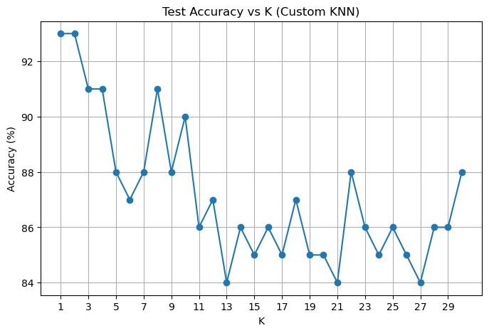

Visualizing Learning Algorithms: K-Means and K-Nearest Neighbors
1. K-Means
In this analysis, I implemented a custom version of the K-Means clustering algorithm and applied it to the Palmer Penguins dataset using two key features: bill_length_mm and flipper_length_mm. This task allowed me to observe how the algorithm converges over iterations, to visually track clustering behavior, and to evaluate model performance using quantitative metrics such as Within-Cluster Sum of Squares (WCSS) and the Silhouette Score. Additionally, I compared my implementation against the standard scikit-learn KMeans algorithm for verification.
The Palmer Penguins dataset provides physical measurements for three penguin species from the Antarctic region. I focused on the following two continuous features:
- Bill Length (mm): Represents the length of the penguin’s beak.
- Flipper Length (mm): Represents the length of the penguin’s flipper.
To maintain consistency in the input data, I removed all rows with missing values. The resulting dataset contains a well-distributed spread of the two dimensions, making it suitable for 2D visualization.
The custom K-Means algorithm follows the classical iterative approach:
- Randomly initialize
Kcentroids. - Assign each data point to the nearest centroid.
- Update each centroid as the mean of its assigned points.
- Repeat steps 2–3 until the centroids converge or the maximum number of iterations is reached.
Below are the results from the first several iterations when K=3. The plots clearly show the centroids shifting position as the clusters stabilize:

Key Observations:
- Iteration 1–2: Initial centroid assignments are suboptimal. The algorithm reacts with large centroid shifts.
- Iteration 3–5: Centroids move gradually into more central positions within each cluster.
- Iteration 10: The assignments become nearly fixed. No significant changes occur in centroid positions, indicating convergence.
The process demonstrates how the algorithm successfully minimizes intra-cluster distances in each iteration.
import numpy as np
import pandas as pd
import matplotlib.pyplot as plt
from sklearn.metrics import silhouette_score
from sklearn.cluster import KMeans as SK_KMeans
# Load dataset
df = pd.read_csv("palmer_penguins.csv")
df = df[['bill_length_mm', 'flipper_length_mm']].dropna().reset_index(drop=True)
X = df.values
# Plot function
def plot_clusters(X, centroids, labels, title):
plt.figure(figsize=(6, 5))
plt.scatter(X[:, 0], X[:, 1], c=labels, cmap='viridis', alpha=0.6)
plt.scatter(centroids[:, 0], centroids[:, 1], c='red', s=150, marker='X')
plt.xlabel("Bill Length (mm)")
plt.ylabel("Flipper Length (mm)")
plt.title(title)
plt.grid(True)
plt.show()
# Custom KMeans Implementation
def custom_kmeans(X, K, max_iters=100, tol=1e-4, plot_steps=True):
np.random.seed(42)
centroids = X[np.random.choice(X.shape[0], K, replace=False)]
for i in range(max_iters):
# Assignment step
distances = np.linalg.norm(X[:, np.newaxis] - centroids, axis=2)
labels = np.argmin(distances, axis=1)
# Visualization
if plot_steps:
plot_clusters(X, centroids, labels, f"K={K} Iteration {i+1}")
# Update step
new_centroids = np.array([X[labels == j].mean(axis=0) for j in range(K)])
# Check for convergence
if np.all(np.linalg.norm(new_centroids - centroids, axis=1) < tol):
break
centroids = new_centroids
return labels, centroids
# Run custom KMeans with K=3 as example
labels_custom, centroids_custom = custom_kmeans(X, K=3)To verify correctness, I compared my results to the standard KMeans function from scikit-learn. The resulting clusters from both methods are visually and structurally consistent:
sk_kmeans = SK_KMeans(n_clusters=3, random_state=42)
labels_sklearn = sk_kmeans.fit_predict(X)
plot_clusters(X, sk_kmeans.cluster_centers_, labels_sklearn, "sklearn KMeans Clusters (K=3)")To explore the optimal number of clusters (K), I calculated the following for K = 2 through K = 7:
- WCSS (Within-Cluster Sum of Squares): Measures compactness within clusters. Lower values are preferred.
- Silhouette Score: Measures how well-separated clusters are. Scores range from -1 (poor) to 1 (excellent).
WCSS Trend:
- There is a sharp drop in WCSS when increasing K from 2 to 3 and from 3 to 4.
- After K=4, the decrease becomes marginal, suggesting diminishing returns.
- Based on the “elbow method,” K=3 or K=4 appears to be the inflection point.
Silhouette Score Trend:
- The score peaks at K=2 (around 0.61), then drops significantly for K=3 and further declines with higher K values.
- This suggests that K=2 may produce the most well-defined and clearly separated clusters.
# Evaluation metrics for K=2 to 7
wcss = []
sil_scores = []
K_range = range(2, 8)
for k in K_range:
km = SK_KMeans(n_clusters=k, random_state=42)
labels = km.fit_predict(X)
wcss.append(km.inertia_) # WCSS
sil_scores.append(silhouette_score(X, labels)) # Silhouette Score
# Plot WCSS & Silhouette Scores
plt.figure(figsize=(12, 5))
plt.subplot(1, 2, 1)
plt.plot(K_range, wcss, marker='o')
plt.title("WCSS vs K")
plt.xlabel("Number of Clusters")
plt.ylabel("WCSS")
plt.subplot(1, 2, 2)
plt.plot(K_range, sil_scores, marker='o', color='green')
plt.title("Silhouette Score vs K")
plt.xlabel("Number of Clusters")
plt.ylabel("Silhouette Score")
plt.tight_layout()
plt.show()There is a notable trade-off between interpretability and cluster cohesion:
- Choosing K=2 gives the best Silhouette Score, suggesting that the data naturally splits into two well-separated groups.
- However, K=3 aligns better with known biological distinctions — the Palmer Penguins dataset includes three species. Clustering into three groups may yield more semantically meaningful segmentation.
- K=4 provides a slightly lower WCSS, but the additional cluster does not seem to provide extra insight.
Therefore, my choice of K=3 balances statistical reasoning with biological interpretability. I would prioritize this value in practice, especially in a domain-aware application such as ecology or biology.
2. K Nearest Neighbors
In this analysis, I implemented the K-Nearest Neighbors (KNN) algorithm from scratch and evaluated its performance on a synthetic, non-linearly separable dataset. The binary classification problem involves determining whether a point lies above or below a “wiggly” decision boundary defined by a sinusoidal function. This setting provides an excellent test case for exploring how KNN adapts to non-linear decision boundaries.
To create the dataset, I uniformly sampled 100 points in the 2D space where both x1 and x2 range from -3 to 3. The target label y was assigned as 1 if the point was above the boundary defined by:
\(x_2 > \sin(4x_1) + x_1\)
Otherwise, the label was set to 0.
np.random.seed(42)
n = 100
x1_train = np.random.uniform(-3, 3, n)
x2_train = np.random.uniform(-3, 3, n)
boundary_train = np.sin(4 * x1_train) + x1_train
y_train = (x2_train > boundary_train).astype(int)
train_data = pd.DataFrame({'x1': x1_train, 'x2': x2_train, 'y': y_train})The figure below shows the generated training data, with red and blue points indicating the two classes and the dashed line representing the true decision boundary.
My Observations:
- The true boundary is highly non-linear and oscillates across the x-axis.
- Simple linear classifiers would struggle with this type of structure.
- This kind of setting favors local, instance-based learning algorithms like KNN.
plt.figure(figsize=(6, 6))
plt.scatter(train_data['x1'], train_data['x2'], c=train_data['y'], cmap='bwr', edgecolor='k')
x_vals = np.linspace(-3, 3, 300)
plt.plot(x_vals, np.sin(4 * x_vals) + x_vals, 'k--', label="Decision boundary")
plt.xlabel("x1")
plt.ylabel("x2")
plt.title("Training Data with Wiggly Boundary")
plt.legend()
plt.grid(True)
plt.show()I implemented a simple KNN classifier in Python using the following logic:
- Compute Euclidean distance from the test point to all training points.
- Identify the k nearest neighbors.
- Assign the most common label among the neighbors.
def knn_predict(X_train, y_train, X_test, k):
predictions = []
for test_point in X_test:
distances = np.linalg.norm(X_train - test_point, axis=1)
nearest_k_indices = np.argsort(distances)[:k]
nearest_k_labels = y_train[nearest_k_indices]
majority_vote = Counter(nearest_k_labels).most_common(1)[0][0]
predictions.append(majority_vote)
return np.array(predictions)
for k in range(1, 31):
y_pred_custom = knn_predict(X_train, y_train_arr, X_test, k)
acc = np.mean(y_pred_custom == y_test_arr)
accuracies.append(acc)This allowed me to experiment with different values of k and evaluate model behavior on unseen data.
To validate my implementation, I also used scikit-learn’s KNeighborsClassifier as a benchmark.
sklearn_accuracies = []
for k in range(1, 31):
clf = KNeighborsClassifier(n_neighbors=k)
clf.fit(X_train, y_train_arr)
y_pred = clf.predict(X_test)
acc = accuracy_score(y_test_arr, y_pred)
sklearn_accuracies.append(acc)
# Optional: compare plots
plt.figure(figsize=(8, 5))
plt.plot(range(1, 31), [100 * a for a in accuracies], label='Custom KNN', marker='o')
plt.plot(range(1, 31), [100 * a for a in sklearn_accuracies], label='sklearn KNN', marker='x')
plt.title("Accuracy Comparison: Custom vs sklearn KNN")
plt.xlabel("K")
plt.ylabel("Accuracy (%)")
plt.legend()
plt.grid(True)
plt.show()I generated a separate test dataset using the same logic but with a different random seed, ensuring no data leakage.
np.random.seed(999)
x1_test = np.random.uniform(-3, 3, n)
x2_test = np.random.uniform(-3, 3, n)
boundary_test = np.sin(4 * x1_test) + x1_test
y_test = (x2_test > boundary_test).astype(int)
test_data = pd.DataFrame({'x1': x1_test, 'x2': x2_test, 'y': y_test})Then, I ran predictions using both my custom KNN and sklearn KNN for k = 1 to 30, recording the test set accuracy each time.

My Insights:
- The accuracy peaks at k = 1 and 2, achieving ~93%.
- As k increases, accuracy declines slightly and fluctuates around 85–88%.
- This is expected — small values of k are more sensitive to local patterns, which is ideal for highly non-linear boundaries.
Key findings are:
- The two methods yield nearly identical results, confirming that my implementation is correct.
- Minor fluctuations are due to tie-breaking or rounding differences but overall trends align perfectly.
- Both models identify that k = 1–2 are optimal for this classification task.
K-Nearest Neighbors (KNN) demonstrates strong performance in non-linear classification tasks such as this one, especially when the number of neighbors k is small. A smaller k allows the algorithm to closely follow complex boundaries and capture fine-grained patterns in the data.
However, there is an inherent trade-off: increasing k tends to reduce variance and noise sensitivity but can also oversmooth the decision boundary, leading to the loss of important local structure. In this particular dataset, I found that setting k = 1 or k = 2 resulted in the highest test accuracy, effectively capturing the intricate shape of the true boundary.